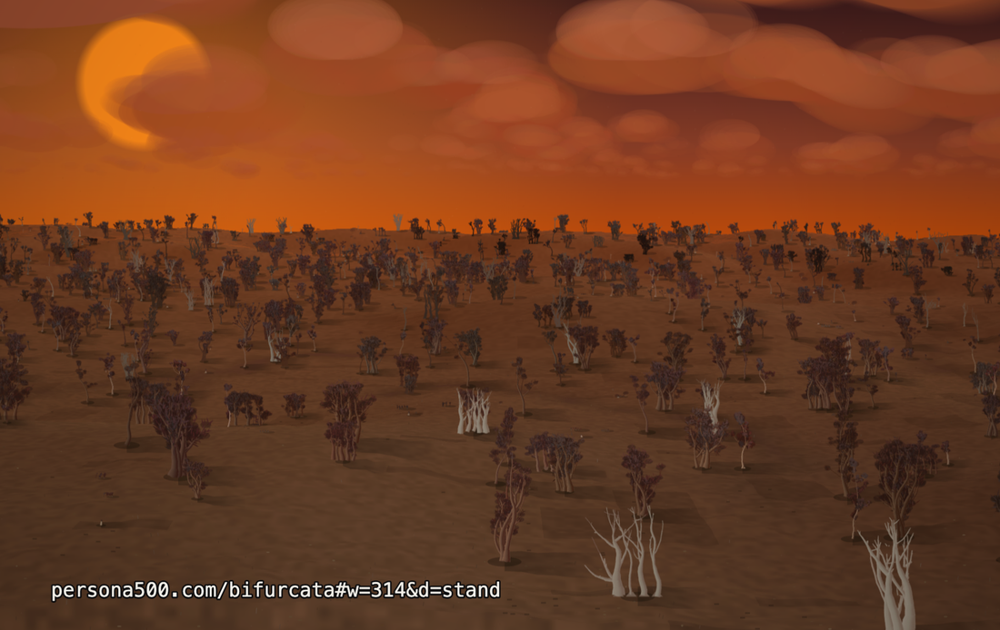
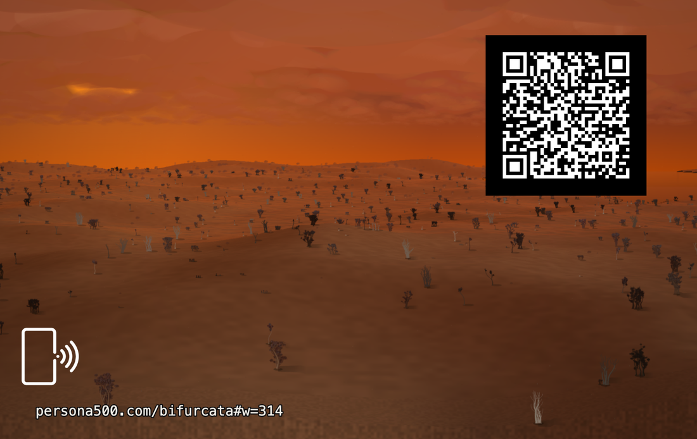

Vibe Cards · Card 011 · Parametric deck
A card that is a world number. The trees on it were grown from the digits of pi, world by world. Open the address and the same trees grow again, on any device.


That address is the whole card. One number names the world. The engine reads it from the end of its own web address, so there is nothing to type.
https://persona500.com/bifurcata#w=77777
Open it in a new tab and world 77777 is the first thing drawn. The same number gives the same world on a phone, a laptop or a wall screen. Only the slice you see changes with the screen. The world does not.
Regenerate it It is on the deck, and runs at home Print it yourself
w | The world number. Same number, same planet, same trees, every time. |
|---|---|
f | Optional. The kaleidoscope fold: 0 open, 3 gasket, 4 cubes, 6 metatron, 8 octopus, 12 rose. This card is open. |
c | Optional. The cutting pattern: slab, balanced, complex or grid. This card is slab. |
d | Optional. How close you stand: massif, stand, assembly, thicket, portrait, crown or root. This card shows all of them. |
Only the world number is printed, because the other three are at their defaults. An address leaves out what it does not change.
Its child: Pangea (card 012). Bifurcata grows the trees, Leviathan (card 010) grinds the pigment, and Pangea is what the two make together.
| Card size | 85.6 × 53.98 mm — a normal bank-card blank |
|---|---|
| Artwork | Exported at 2066 × 1319, the full bleed size |
| QR code | 20 mm on the back. It opens this page. |
| Tap mark | A small phone symbol on each face. Hold your phone there. |
| Licence | MIT |
What would you change about this card, or the engine behind it?
No account, no email, nothing to sign up for.